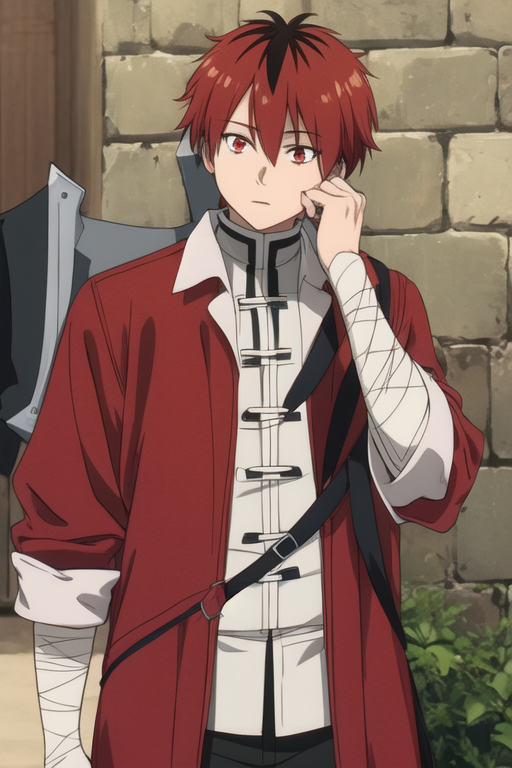
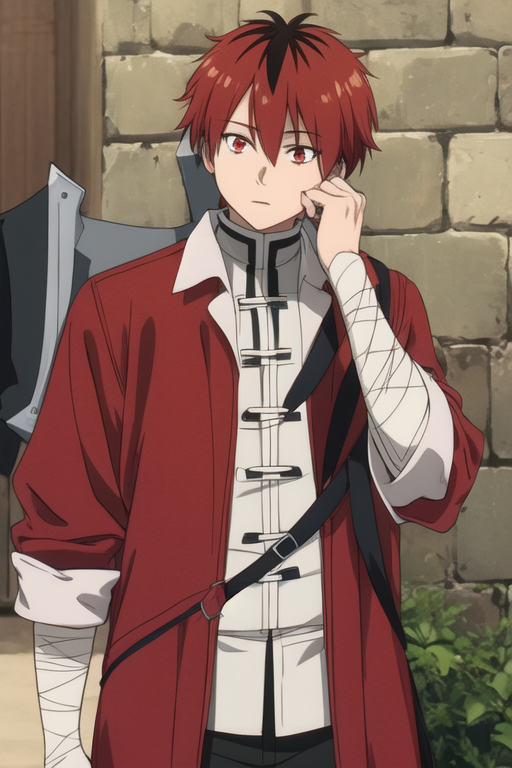

Frieren: The protagonist, a wise and introspective elven mage. After the victory over the Demon King, she embarks on a journey to understand
the value of her past relationships and the meaning of her long life. Her quest for connection and reflection drives the narrative.
Fern: A young mage and Frieren’s apprentice, Fern is eager and determined. She represents the next generation of adventurers, learning from
Frieren while also challenging her to embrace the present. Fern's growth and enthusiasm bring a fresh perspective to the story.
Stark: A warrior who becomes an ally on Frieren's journey. Stark is practical and grounded, offering a contrast to Frieren’s more
contemplative nature. His loyalty and strength play a crucial role as they face various challenges together.

 
